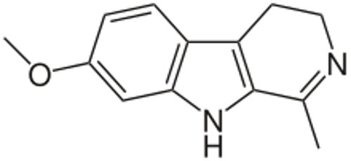

AYAHUASCA
The psychoactive drink ayahuasca has demonstrated in various recent studies that psychedelic-assisted psychotherapy can lead to the decrease of damaging symptoms from mental illnesses. Indeed, a 2018 study proved ayahuasca to be effective in regards to decreasing anxious and depressive symptoms amongst its regular patients (Palhano-Fontes, et al., par. 44). Additionally, compared to non-ayahuasca consumers, these individuals have shown an increased well-being through the reduction of their mental health symptoms while still preserving full cognitive function (par. 44). This piece of evidence illustrates the true benefits of this psychedelic drug and how its effects are closely associated with those of common antidepressants.

Main benefits: Decrease in the severity of mental health symptoms, increase in empathy